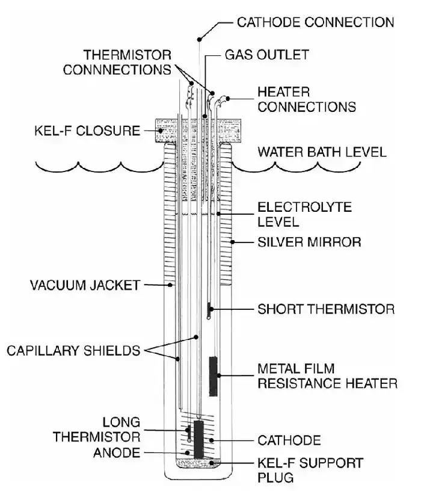
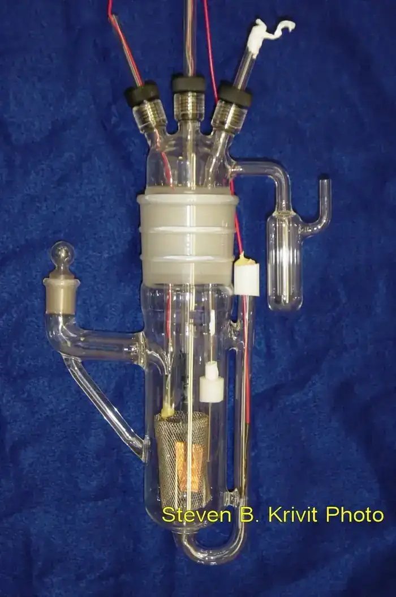
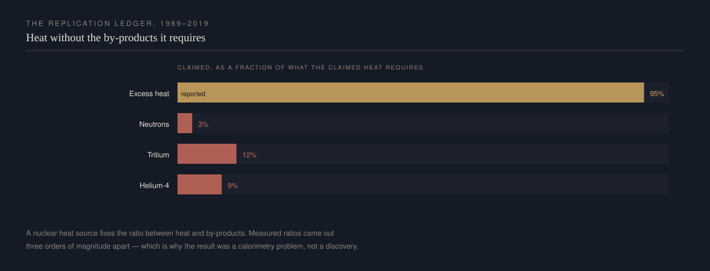

The announcement
Martin Fleischmann and Stanley Pons, electrochemists at the University of Utah, held a press conference before their paper had been reviewed. They reported that electrolysing heavy water over a palladium cathode produced more heat than the electrical input could account for, and that the excess was large enough to require a nuclear explanation. A fusion reaction between deuterium nuclei would release energy and leave behind neutrons, tritium and helium-4.
Maps, diagrams and images





The claim was extraordinary in the specific sense that matters: it was cheap to test. Palladium, heavy water and a calorimeter cost less than a graduate student's year. Hundreds of labs tried within weeks.
What replication showed
Some groups reported excess heat. Others reported nothing. Almost none reported the full signature: a heat excess that scaled with the neutron flux, the tritium produced and the helium-4 detected. The measurements that were easiest to make — neutrons above background — mostly came back at background, sometimes at levels that would have been lethal if the claimed heat were nuclear in origin.
The calorimetry itself was the weak point. Fleischmann and Pons used a cell that ran at varying temperature, and their calculation assumed all the recombination heat was recovered. A cell that partially boils is a cell whose energy balance is unknown. When calorimetry was improved, the effect shrank.
1989, US Department of Energy: a panel chaired by John Huizenga found no convincing evidence of cold fusion and no theory that could accommodate it.
2004, a second DOE review: the same conclusion, with a recommendation that a small, focused programme might be funded. It was not.
2019, a Google-funded replication: a multi-lab programme published in Nature after two years of careful calorimetry found no excess heat in palladium–deuterium cells. It did produce better calorimeters, which was the useful part.
The standing exception: the field still meets (ICCF), still publishes, and still points to a handful of positive replications. None has produced the by-product ratio the claim requires, in a calorimeter another lab could reproduce.
Why the claim will not die
Because the failure mode is boring and the promise is enormous. A negative result is a paper about calorimetry; a positive one is free energy. The archive labels it a fringe claim rather than a hoax because the original authors were not fabricating — they were measuring badly, and then defending a measurement instead of a hypothesis. That is a common and human failure, and it is not the same as fraud.
It also sits next to a real result that gets confused with it: sonoluminescence, where a collapsing bubble really does produce a flash of light and, in some experiments, temperatures of thousands of kelvin. Bubble fusion claimed the same route to the same prize and failed the same test.
What would settle it
One cell, sealed, with the heat measured by two independent methods and the gas analysed for helium-4, tritium and neutrons in the same run, replicated by a lab that expects it to fail. That experiment has been attempted; the ratio never appears.
Sources for this page
- Wikipedia, “Cold fusion” — history, replication attempts and reviewsen.wikipedia.org
- Fleischmann & Pons (1989), J. Electroanal. Chem. — the original claimdoi.org
- Berlinguette et al. (2019), Nature — the Google-funded replication programmedoi.org
- Wikipedia, “Sonoluminescence” — the neighbouring real effecten.wikipedia.org
Open resources on this topic
- BookCrystal Report 5.0 for Cold Fusion User Guide — Various · 1996 (Internet Archive, free to read)
- BookResearch in Cold Fusion Field (2-Mar-2016) — Lok Sabha Secretariat · 2016 (Internet Archive, free to read)
- BookWeb databases with Cold Fusion 3 — Burke, John (John J.) · 1998 (Internet Archive, free to read)
- PapersOpen-access articles: DOAJ · PubMed Central · Internet Archive Scholar
- BooksPublic-domain and borrowable copies: Open Library · Project Gutenberg · Google Books
Cite this page
Momin, S. (2026). Cold Fusion. The Larger World Archive. https://drsamonline.github.io/LARGE_GLOBE/cold-fusion.htmlMomin, Sohil. “Cold Fusion.” The Larger World Archive, 2026, https://drsamonline.github.io/LARGE_GLOBE/cold-fusion.html.Momin, Sohil. “Cold Fusion.” The Larger World Archive, 2026. https://drsamonline.github.io/LARGE_GLOBE/cold-fusion.html.@misc{cold2026cold,
author = {Momin, Sohil},
title = {Cold Fusion},
year = {2026},
howpublished = {The Larger World Archive},
url = {https://drsamonline.github.io/LARGE_GLOBE/cold-fusion.html},
note = {Last reviewed 20 November 2026}
}Last reviewed 20 November 2026 · Corrections policy · this page is not peer reviewed